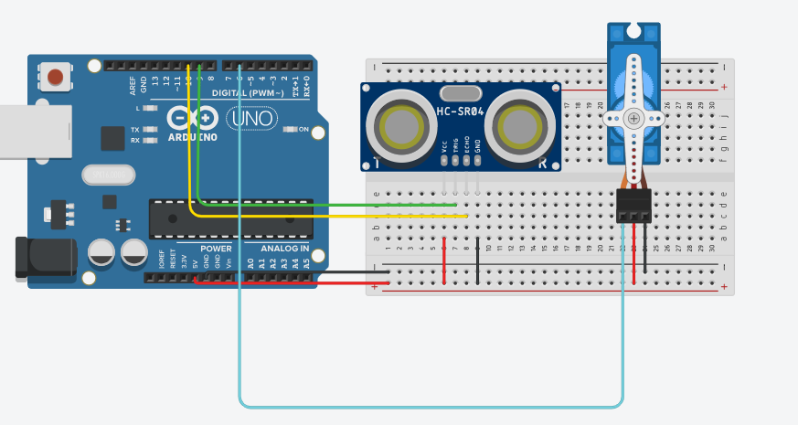

Arduino ve Processing kullanarak yapılmış servo + ultrasonik sensörlü radar sistemi.
#include <Servo.h>
#define trigPin 9
#define echoPin 10
#define servoPin 6
Servo radarServo;
void setup() {
Serial.begin(9600);
radarServo.attach(servoPin);
pinMode(trigPin, OUTPUT);
pinMode(echoPin, INPUT);
}
void loop() {
for (int angle = 0; angle <= 180; angle += 2) {
radarServo.write(angle);
int distance = measureDistance();
Serial.print(angle);
Serial.print(",");
Serial.println(distance);
delay(50);
}
for (int angle = 180; angle >= 0; angle -= 2) {
radarServo.write(angle);
int distance = measureDistance();
Serial.print(angle);
Serial.print(",");
Serial.println(distance);
delay(50);
}
}
int measureDistance() {
digitalWrite(trigPin, LOW);
delayMicroseconds(2);
digitalWrite(trigPin, HIGH);
delayMicroseconds(10);
digitalWrite(trigPin, LOW);
long duration = pulseIn(echoPin, HIGH);
int distance = duration * 0.034 / 2;
return distance;
}
import processing.serial.*;
Serial myPort;
String data;
float angle, distance;
void setup() {
size(600, 600);
myPort = new Serial(this, Serial.list()[0], 9600);
myPort.bufferUntil('\n');
}
void draw() {
background(0);
translate(width / 2, height);
stroke(0, 255, 0);
noFill();
arc(0, 0, 400, 400, PI, TWO_PI);
arc(0, 0, 300, 300, PI, TWO_PI);
arc(0, 0, 200, 200, PI, TWO_PI);
arc(0, 0, 100, 100, PI, TWO_PI);
stroke(255, 0, 0);
float rad = radians(angle);
float x = cos(rad) * distance * 2;
float y = -sin(rad) * distance * 2;
line(0, 0, x, y);
ellipse(x, y, 10, 10);
}
void serialEvent(Serial myPort) {
data = myPort.readStringUntil('\n');
if (data != null) {
String[] values = split(trim(data), ",");
if (values.length == 2) {
angle = float(values[0]);
distance = float(values[1]);
}
}
}
